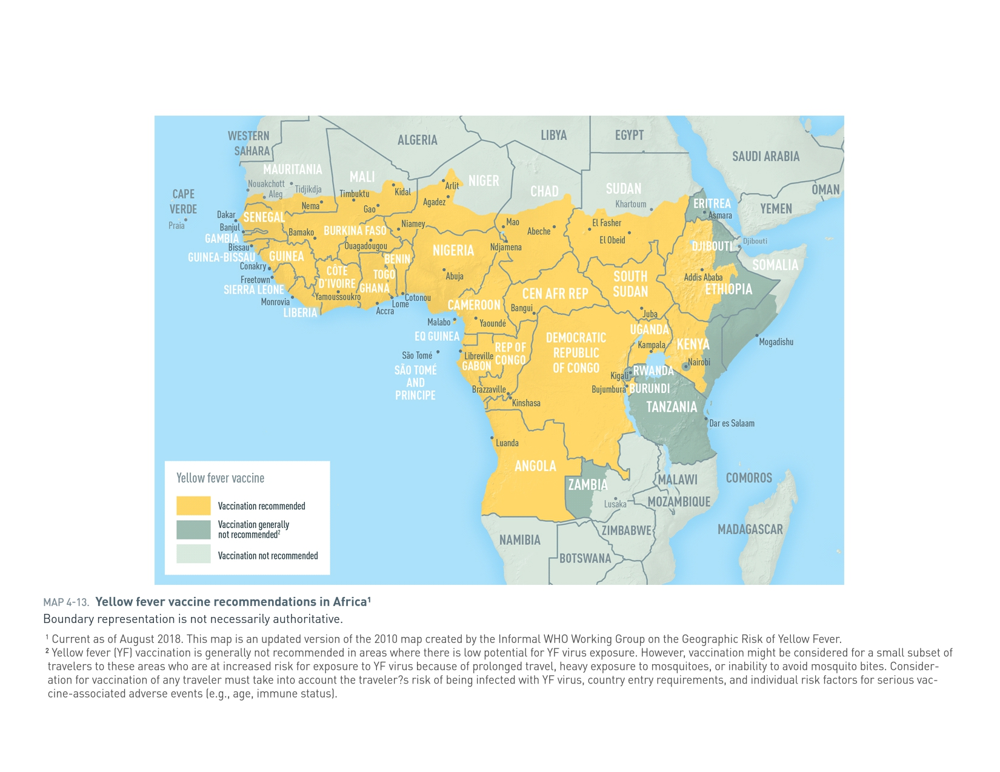
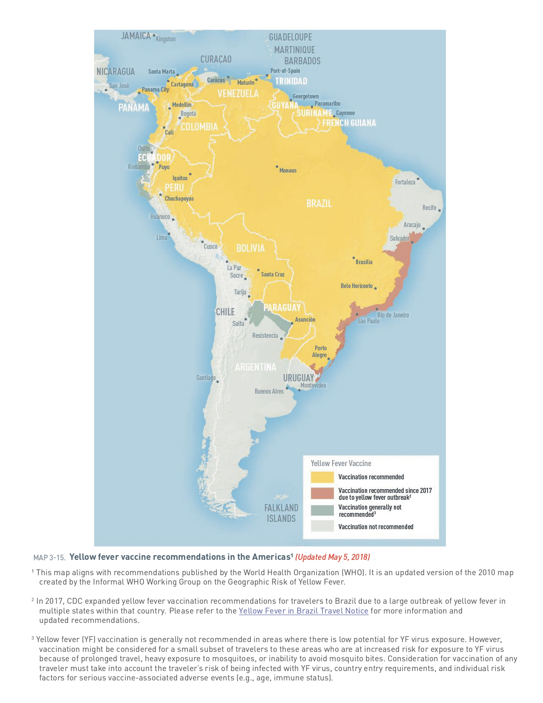

Fievre Jaune
Flavivirus a haute mortalite : clinique, diagnostic, vaccination et prevention.
Repartition geographique
Incidence environ 10x plus elevee en Afrique qu'en Amerique.
Afrique

Ameriques

Agent causal
Virus de la famille des Flaviviridae (comme dengue, zika, encephalite japonaise, encephalite a tiques et West Nile).
Transmission
Vectorielle : Moustiques piquant la journee (principalement le Aedes aegypti mais aussi Aedes albopictus, le moustique tigre).
Incubation
3-6 jours
Presentation clinique
Souvent de courte duree : fievre elevee d'apparition subite, cephalees, douleurs des membres, frissons, nausees, vomissements, malaise. Apres quelques jours, ictere progressif.
Forme severe : 2eme phase avec nouvel EF, douleurs abdominales, vomissements, ictere.
Phase toxique : evolution hemorragique ⇒ epistaxis, saignements du tractus gastro-intestinal, insuffisances d'organe (renal, hepatique), troubles neurologiques (agitation, convulsions, delire, coma), choc.
Pronostic : mortalite de 50-60%.
Labo
Leucopenie, IRA avec importante proteinurie, perturbation des tests hepatiques (ASAT > ALAT), PAL discretement elevee, TP diminue (coagulopathie sur defaut de synthese des facteurs vit. K dependant).
Diagnostic
Serologie. Les possibles reactions croisees avec d'autres Flavivirus peuvent rendre l'interpretation difficile. Un test PCR est disponible au Centre national de reference pour les infections virales emergentes (CRIVE) des HUG.
Diagnostic differentiel
Dengue, autres fievres hemorragiques, malaria, hepatites virales, enterique, fievre Q.
Traitement et prevention
Aucun traitement specifique n'est actuellement disponible, le traitement repose sur une prise en charge de support.
Vaccination
(se fait seulement dans centres de vaccination de reference ou chez medecin accredite). En raison d'un risque (tres rare) d'effets secondaires graves, en particulier chez les nourrissons, les personnes de >65 ans et les personnes immunosupprimees, le risque reel d'exposition doit toujours etre mis en balance avec le risque d'effets secondaires avant de decider d'une vaccination.
Duree de protection de la vaccination : a vie avec 1 dose unique chez personne immunocompetente. En cas de voyage a haut risque (sejour prolonge en zone a haute endemicite, en zone d'epidemie) une deuxieme dose est recommandee si la premiere dose date de plus de 10 ans.
Quand référer ?
Cas complexes ou severes necessitant un avis specialise. Référer un patient →